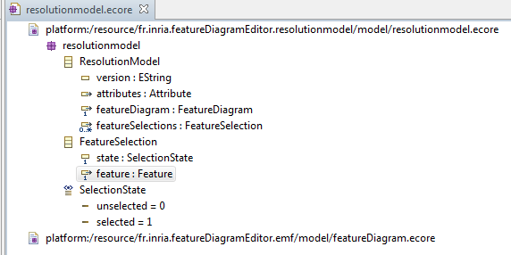

Two metamodels are used on these Selection and Product Derivation engine :
The feature meta-model presented on the following figure :

For more information about it please refer to the Feature Diagram Editor Documentation.
the resolution model that store selected and unselected features as presented on the following figure :

Note that Attribute, FeatureDiagram and Feature meta-classes are meta-classes of featureDiagram metamodel. The enumeration SelectionState permits to know if a feature is selected or not.